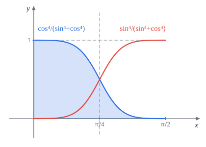
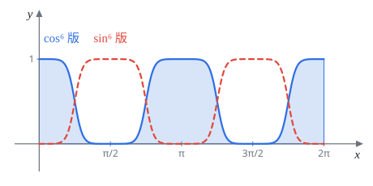
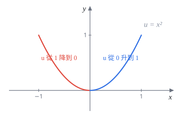

Week 11 積分招式二：變數變換
AP Calculus I（115 學年）Lecture Note 11 教學與題解
講義筆誤p.88（§11.3）：倒數第二行第二項的係數應為 $+\frac1{2\sqrt2}$，最後答案的分式也上下顛倒，應為 $\dfrac1{4\sqrt2}\ln\left|\dfrac{x^2+\frac1{x^2}-\sqrt2}{x^2+\frac1{x^2}+\sqrt2}\right|+C$。見題 13。
講義筆誤p.92（§11.7 第二例）：第一行化簡後的被積函數應為 $-4\dfrac{(1-t^2)^2}{t(1+t^2)^2}$，講義少了平方；下一行和最後答案是對的。見題 23。
講義筆誤p.93 定理 11.8.1：左邊應為 $f\big((ax-\frac bx)^2\big)$，不是 $ax+\frac bx$（取 $f(s)=e^{-s}$、$a=b=1$，加號版左邊約 $0.016$，右邊是 $\frac{\sqrt\pi}2\approx0.886$）。證明中 $du=(a+\frac b{x^2})dx$ 不是 $dt$，且 $2I$ 那行不該有 $\frac12$。見題 25。
講義筆誤p.93 第一個例題：解答算的是 $\int_{-\infty}^\infty=\frac\pi{\sqrt2}$，題目問的是 $\int_0^\infty$，還要除以 2，答案是 $\frac\pi{2\sqrt2}$。見題 26。
上週的招式一是「查表倒過來」，只對看得出反導函數的函數有用。遇到 $\int2x\cos(x^2)\,dx$ 這種，表上沒有，但你可能注意到 $2x$ 剛好是 $x^2$ 的導數。這週的變數變換（substitution）就是把這個觀察變成標準程序：把一團複雜的東西叫做 $u$，讓積分變成表上有的樣子。
它其實就是連鎖律倒過來用。連鎖律說 $\big(F(g(x))\big)'=F'(g(x))\,g'(x)$，所以看到「某函數的導數 $\times$ 裡面那一層的導數」，積回去就是 $F(g(x))$。
11.1 變數變換 I：不定積分
定理 11.1.1若 $u=g(x)$ 的導數連續，$f$ 在 $g$ 的值域上連續，則
$$\int f(g(x))\,g'(x)\,dx=\int f(u)\,du.$$操作上把它想成「換零件」：
- 選 $u=g(x)$，通常是括號裡、根號裡、分母、指數上那一團。
- 算 $du=g'(x)\,dx$。
- 把被積函數全部換成 $u$，$dx$ 也要換掉。換完不能殘留 $x$，殘留就是選錯或要再整理。
- 對 $u$ 積分，最後換回 $x$。不定積分的答案要用原本的變數寫。
題 1求 $\displaystyle\int\left(1-\frac1x\right)\cos(x-\ln x)\,dx$。
cos 裡面那團是 $x-\ln x$，它的導數是 $1-\frac1x$，前面剛好有。令 $u=x-\ln x$，$du=\left(1-\frac1x\right)dx$：
$$\int\cos u\,du=\sin u+C=\sin(x-\ln x)+C.$$$\sin(x-\ln x)+C$
題 2用變數變換求（對照上週的 Log-trick）
(a) $\displaystyle\int\frac x{1-x^2}\,dx$ (b) $\displaystyle\int\tan x\,dx$
(a) 令 $u=1-x^2$，$du=-2x\,dx$，所以 $x\,dx=-\frac12du$：
$$\int\frac x{1-x^2}\,dx=-\frac12\int\frac{du}u=-\frac12\ln|u|+C=-\frac12\ln|1-x^2|+C.$$(b) $\tan x=\frac{\sin x}{\cos x}$。令 $u=\cos x$，$du=-\sin x\,dx$：
$$\int\frac{\sin x}{\cos x}\,dx=-\int\frac{du}u=-\ln|\cos x|+C.$$這兩題就是上週 $\int\frac{f'}f=\ln|f|$ 的由來：令 $u=f(x)$，$du=f'(x)\,dx$，積分變成 $\int\frac{du}u$。
(a) $-\frac12\ln|1-x^2|+C$ (b) $-\ln|\cos x|+C=\ln|\sec x|+C$
本節練習
練習 11.1-1求 $\displaystyle\int xe^{x^2}\,dx$。
詳解
考點：$e^{x^2}$ 的裡面那團是 $x^2$，它的導數 $2x$ 差個常數倍就在前面。令 $u=x^2$，$du=2x\,dx$，所以 $x\,dx=\frac12du$：
$$\int e^u\cdot\frac12\,du=\frac12e^u+C.$$$\dfrac12e^{x^2}+C$
練習 11.1-2求 $\displaystyle\int\sin^3x\cos x\,dx$。
詳解
$\sin x$ 和它的導數 $\cos x$ 同時出現。令 $u=\sin x$，$du=\cos x\,dx$：
$$\int u^3\,du=\frac{u^4}4+C.$$$\dfrac14\sin^4x+C$
練習 11.1-3求 $\displaystyle\int\frac{e^x}{1+e^{2x}}\,dx$。
詳解
$e^{2x}=(e^x)^2$，分母是 $1+(\text{某東西})^2$，目標是 $\tan^{-1}$。令 $u=e^x$，$du=e^x\,dx$，分子剛好用掉：
$$\int\frac{du}{1+u^2}=\tan^{-1}u+C.$$$\tan^{-1}(e^x)+C$
練習 11.1-4求 $\displaystyle\int\frac1{x\ln x}\,dx$。
詳解
把它看成 $\dfrac{1}{\ln x}\cdot\dfrac1x$。令 $u=\ln x$，$du=\dfrac{dx}x$：
$$\int\frac{du}u=\ln|u|+C.$$換回 $x$，絕對值要留著。
$\ln|\ln x|+C$
11.2 變數變換 II：定積分
定理 11.2.1若 $u=g(x)$ 在包含 $[a,b]$ 的區域上導數連續，$f$ 在 $g$ 的值域上連續，則
$$\int_a^bf(g(x))\,g'(x)\,dx=\int_{g(a)}^{g(b)}f(u)\,du.$$定積分換變數時，上下限跟著換：$x=a$ 對應 $u=g(a)$，$x=b$ 對應 $u=g(b)$。這樣算完直接代 $u$ 的上下限，不必換回 $x$。常見錯誤是換了被積函數卻沒換上下限。
題 3用適當的變數變換求 $\displaystyle\int_0^1x^3\sqrt{1+x^2}\,dx$。
令 $u=1+x^2$，$du=2x\,dx$。$x^3$ 拆成 $x^2\cdot x$：$x\,dx=\frac12du$，剩下的 $x^2=u-1$。上下限 $x=0\to u=1$，$x=1\to u=2$：
$$\int_0^1x^2\sqrt{1+x^2}\cdot x\,dx=\frac12\int_1^2(u-1)\sqrt u\,du=\frac12\int_1^2\left(u^{3/2}-u^{1/2}\right)du=\frac12\left[\frac25u^{5/2}-\frac23u^{3/2}\right]_1^2.$$$u=2$：$\frac25\cdot4\sqrt2-\frac23\cdot2\sqrt2=\frac{24\sqrt2-20\sqrt2}{15}=\frac{4\sqrt2}{15}$。$u=1$：$\frac25-\frac23=-\frac4{15}$。相減再乘 $\frac12$：$\frac12\cdot\frac{4\sqrt2+4}{15}$。
$\dfrac{2(\sqrt2+1)}{15}$
解題套路$u$ 吃掉一部分之後還剩下 $x$，就用 $u=g(x)$ 反解出 $x$ 的式子代進去（題 3 的 $x^2=u-1$）。
題 4用適當的變數變換求 $\displaystyle\int_0^1\frac1{1+e^x}\,dx$。
直接令 $u=1+e^x$，$du=e^x\,dx$，分子沒有 $e^x$ 可以配。改成上下同乘 $e^{-x}$：
$$\frac1{1+e^x}=\frac{e^{-x}}{e^{-x}+1}.$$現在令 $u=e^{-x}+1$，$du=-e^{-x}\,dx$。上下限 $x=0\to u=2$，$x=1\to u=1+\frac1e$：
$$\int_0^1\frac{e^{-x}}{e^{-x}+1}\,dx=-\int_2^{1+1/e}\frac{du}u=\ln2-\ln\left(1+\frac1e\right)=\ln\frac{2e}{e+1}.$$$\ln\dfrac{2e}{e+1}=1+\ln2-\ln(1+e)\approx0.380$
11.2.1 怎麼選 $u$
沒有萬用公式，但有幾個常中的方向：
- 經典嘗試：找「一團東西」和「它的導數」同時出現。$\ln x$ 配 $\frac1x$、$\tan x$ 配 $\sec^2x$、$\sin x$ 配 $\cos x$、$\sin^{-1}x$ 配 $\frac1{\sqrt{1-x^2}}$。
- 去根號：令 $u=$ 根號裡面那一團，或令 $u=$ 整個根號。
- 降次方：$x^3$ 配 $x^8=(x^4)^2$、$x$ 配 $x^4=(x^2)^2$，令 $u$ 為那個次方，常會變成 $\frac1{1+u^2}$ 這種表上的形式。
經典嘗試
題 5設 $p\gt0$，求 $\displaystyle\int\frac{(\ln x)^p}x\,dx$。
$\ln x$ 和它的導數 $\frac1x$ 都在。令 $u=\ln x$，$du=\frac{dx}x$：
$$\int u^p\,du=\frac{u^{p+1}}{p+1}+C.$$$p\gt0$ 保證 $p+1\ne0$，冪次公式可以用。
$\dfrac{(\ln x)^{p+1}}{p+1}+C$
題 6求 $\displaystyle\int\frac1{\cos^2x\sqrt{1+\tan x}}\,dx$。
$\frac1{\cos^2x}=\sec^2x$ 正是 $\tan x$ 的導數。令 $u=1+\tan x$，$du=\sec^2x\,dx$：
$$\int\frac{du}{\sqrt u}=\int u^{-1/2}\,du=2u^{1/2}+C.$$$2\sqrt{1+\tan x}+C$
題 7求不定積分
(a) $\displaystyle\int e^x\sqrt{e^x+1}\,dx$ (b) $\displaystyle\int\cos\theta\sin^6\theta\,d\theta$ (c) $\displaystyle\int\frac x{\sqrt[4]{x+2}}\,dx$
(a) 令 $u=e^x+1$，$du=e^x\,dx$：$\int\sqrt u\,du=\frac23u^{3/2}+C$。
(b) 令 $u=\sin\theta$，$du=\cos\theta\,d\theta$：$\int u^6\,du=\frac{u^7}7+C$。
(c) 令 $u=x+2$，$du=dx$，剩下的 $x=u-2$：
$$\int\frac{u-2}{u^{1/4}}\,du=\int\left(u^{3/4}-2u^{-1/4}\right)du=\frac47u^{7/4}-\frac83u^{3/4}+C.$$提出 $u^{3/4}$：$u^{3/4}\left(\frac47u-\frac83\right)=\frac4{21}u^{3/4}(3u-14)$。$u=x+2$ 代回，$3u-14=3x-8$。
(a) $\frac23(1+e^x)^{3/2}+C$ (b) $\frac{\sin^7\theta}7+C$ (c) $\frac4{21}(x+2)^{3/4}(3x-8)+C$（與講義相同）
題 8求定積分
(a) $\displaystyle\int_0^{1/2}\frac{\sin^{-1}x}{\sqrt{1-x^2}}\,dx$ (b) $\displaystyle\int_{-\pi/6}^{\pi/6}\tan^3\theta\,d\theta$ (c) $\displaystyle\int_0^4\frac x{\sqrt{1+2x}}\,dx$
(a) 令 $u=\sin^{-1}x$，$du=\frac{dx}{\sqrt{1-x^2}}$。上下限 $0\to0$，$\frac12\to\frac\pi6$：
$$\int_0^{\pi/6}u\,du=\frac12\left(\frac\pi6\right)^2=\frac{\pi^2}{72}.$$(b) $\tan^3\theta$ 是奇函數，在 $[-\frac\pi6,\frac\pi6]$ 上連續，積分對稱抵消為 $0$（§9.4.1）。不想用對稱也行：令 $u=\cos\theta$ 算出反導函數 $\frac12\tan^2\theta+\ln|\cos\theta|$，兩端代入值相同，相減為 $0$。
(c) 令 $u=1+2x$，$x=\frac{u-1}2$，$dx=\frac12du$。上下限 $0\to1$，$4\to9$：
$$\int_1^9\frac{(u-1)/2}{\sqrt u}\cdot\frac12\,du=\frac14\int_1^9\left(u^{1/2}-u^{-1/2}\right)du=\frac14\left[\frac23u^{3/2}-2u^{1/2}\right]_1^9=\frac14\left[(18-6)-\left(\frac23-2\right)\right]=\frac{10}3.$$(a) $\dfrac{\pi^2}{72}$ (b) $0$ (c) $\dfrac{10}3$（與講義相同）
去根號與降次方
題 9求 $\displaystyle\int_1^2y^5(4-y^3)^{2/3}\,dy$。
令 $u=4-y^3$，$du=-3y^2\,dy$。$y^5=y^3\cdot y^2$，$y^2\,dy=-\frac13du$，$y^3=4-u$。上下限 $y=1\to u=3$，$y=2\to u=-4$：
$$\int_3^{-4}(4-u)\,u^{2/3}\left(-\frac13\right)du=\frac13\int_{-4}^3\left(4u^{2/3}-u^{5/3}\right)du=\frac13\left[\frac{12}5u^{5/3}-\frac38u^{8/3}\right]_{-4}^3.$$注意 $u$ 會跑到負的：$u^{2/3}=\left(\sqrt[3]u\right)^2$，負數也有定義。$u=3$：$3^{5/3}\left(\frac{12}5-\frac98\right)=\frac{51}{40}\cdot3^{5/3}$。$u=-4$：$(-4)^{5/3}=-4^{5/3}$、$(-4)^{8/3}=4^{8/3}$，得 $-4^{5/3}\left(\frac{12}5+\frac32\right)=-\frac{39}{10}\cdot4^{5/3}$。
$$\frac13\left(\frac{51}{40}\cdot3^{5/3}+\frac{39}{10}\cdot4^{5/3}\right)=\frac{17}{40}\cdot3\sqrt[3]9+\frac{13}{10}\cdot8\sqrt[3]2.$$$\dfrac{51}{40}\sqrt[3]9+\dfrac{52}5\sqrt[3]2\approx15.76$
題 10求 $\displaystyle\int\frac{\sqrt{2+\sqrt x}}{\sqrt x}\,dx$。
令 $u=2+\sqrt x$，$du=\frac{dx}{2\sqrt x}$，所以 $\frac{dx}{\sqrt x}=2\,du$：
$$\int2\sqrt u\,du=\frac43u^{3/2}+C.$$$\dfrac43\left(2+\sqrt x\right)^{3/2}+C$
題 11求 $\displaystyle\int\frac{x^3}{1+x^8}\,dx$。
$x^8=(x^4)^2$，而 $x^3$ 是 $x^4$ 的導數（差個 $4$）。令 $u=x^4$，$du=4x^3\,dx$：
$$\frac14\int\frac{du}{1+u^2}=\frac14\tan^{-1}u+C.$$$\dfrac14\tan^{-1}(x^4)+C$
題 12求 $\displaystyle\int\frac{x\cos(x^2)}{1+\sin^2(x^2)}\,dx$。
分母是 $1+(\text{某東西})^2$，猜目標是 $\tan^{-1}$。令 $u=\sin(x^2)$，$du=2x\cos(x^2)\,dx$，分子剛好是 $\frac12du$：
$$\frac12\int\frac{du}{1+u^2}=\frac12\tan^{-1}u+C.$$$\dfrac12\tan^{-1}\big(\sin(x^2)\big)+C$
本節練習
練習 11.2-1求 $\displaystyle\int_0^{\sqrt\pi}x\sin(x^2)\,dx$。
詳解
令 $u=x^2$，$du=2x\,dx$，$x\,dx=\frac12du$。上下限 $x=0\to u=0$，$x=\sqrt\pi\to u=\pi$：
$$\frac12\int_0^\pi\sin u\,du=\frac12\big[-\cos u\big]_0^\pi=\frac12\big(1+1\big)=1.$$$1$
練習 11.2-2求 $\displaystyle\int_0^1\frac x{1+x^2}\,dx$。
詳解
分子是分母導數的一半。令 $u=1+x^2$，$du=2x\,dx$。上下限 $x=0\to u=1$，$x=1\to u=2$：
$$\frac12\int_1^2\frac{du}u=\frac12\big[\ln u\big]_1^2=\frac12\ln2.$$$\dfrac12\ln2$
練習 11.2-3求 $\displaystyle\int_0^{\pi/4}\tan x\sec^2x\,dx$。
詳解
$\tan x$ 配它的導數 $\sec^2x$。令 $u=\tan x$，$du=\sec^2x\,dx$。上下限 $x=0\to u=0$，$x=\frac\pi4\to u=1$：
$$\int_0^1u\,du=\frac12.$$$\dfrac12$
練習 11.2-4求 $\displaystyle\int_0^3x\sqrt{x+1}\,dx$。
詳解
考點：去根號，並用 $u$ 反解出殘留的 $x$（§11.2.1）。令 $u=x+1$，$x=u-1$，$du=dx$。上下限 $x=0\to u=1$，$x=3\to u=4$：
$$\int_1^4(u-1)\sqrt u\,du=\int_1^4\left(u^{3/2}-u^{1/2}\right)du=\left[\frac25u^{5/2}-\frac23u^{3/2}\right]_1^4.$$$u=4$：$\frac25\cdot32-\frac23\cdot8=\frac{64}5-\frac{16}3=\frac{112}{15}$。$u=1$：$\frac25-\frac23=-\frac4{15}$。相減：$\frac{112}{15}+\frac4{15}=\frac{116}{15}$。
$\dfrac{116}{15}$
11.3 特殊代換一：$u=x^k\pm\frac1{x^k}$（*）延伸
高中學過 $\left(x+\frac1x\right)^2=x^2+\frac1{x^2}+2$、$\left(x-\frac1x\right)^2=x^2+\frac1{x^2}-2$。分子分母同除一個 $x$ 的次方，常能湊出 $x^k\pm\frac1{x^k}$ 這種結構，而 $x\pm\frac1x$ 的導數 $1\mp\frac1{x^2}$ 又剛好會出現在分子。
題 13求 $\displaystyle\int\frac{x^5-x}{x^8+1}\,dx$。
降次。分子提出 $x$：$(x^4-1)\,x$。令 $y=x^2$，$dy=2x\,dx$：
$$\int\frac{x^5-x}{x^8+1}\,dx=\frac12\int\frac{y^2-1}{y^4+1}\,dy.$$同除 $y^2$。
$$\frac{y^2-1}{y^4+1}=\frac{1-\frac1{y^2}}{y^2+\frac1{y^2}}=\frac{1-\frac1{y^2}}{\left(y+\frac1y\right)^2-2}.$$分子 $1-\frac1{y^2}$ 正是 $y+\frac1y$ 的導數。令 $u=y+\frac1y$，$du=\left(1-\frac1{y^2}\right)dy$：
$$\frac12\int\frac{du}{u^2-2}.$$拆分式。$u^2-2=(u-\sqrt2)(u+\sqrt2)$，可以驗證
$$\frac1{u^2-2}=\frac1{2\sqrt2}\left(\frac1{u-\sqrt2}-\frac1{u+\sqrt2}\right)$$（右邊通分，分子是 $(u+\sqrt2)-(u-\sqrt2)=2\sqrt2$）。這種拆法是之後「招式五」的內容。兩項各自是 $\ln$：
$$\frac12\cdot\frac1{2\sqrt2}\Big(\ln|u-\sqrt2|-\ln|u+\sqrt2|\Big)+C=\frac1{4\sqrt2}\ln\left|\frac{u-\sqrt2}{u+\sqrt2}\right|+C.$$換回 $x$：$u=y+\frac1y=x^2+\frac1{x^2}$。講義最後的分式寫反了（見頁首），把答案微分回去可以確認是 $u-\sqrt2$ 在分子。
$\dfrac1{4\sqrt2}\ln\left|\dfrac{x^2+\frac1{x^2}-\sqrt2}{x^2+\frac1{x^2}+\sqrt2}\right|+C$
本節練習
練習 11.3-1求 $\displaystyle\int\frac{x^2+1}{x^4+1}\,dx$。
詳解
上下同除 $x^2$：
$$\frac{x^2+1}{x^4+1}=\frac{1+\frac1{x^2}}{x^2+\frac1{x^2}}.$$分子 $1+\frac1{x^2}$ 是 $x-\frac1x$ 的導數。令 $u=x-\frac1x$，$du=\left(1+\frac1{x^2}\right)dx$，且 $x^2+\frac1{x^2}=u^2+2$：
$$\int\frac{du}{u^2+2}=\frac1{\sqrt2}\tan^{-1}\frac u{\sqrt2}+C.$$$\dfrac1{\sqrt2}\tan^{-1}\dfrac{x-\frac1x}{\sqrt2}+C$
練習 11.3-2求 $\displaystyle\int\frac{x^2-1}{x^4+1}\,dx$。
詳解
同樣同除 $x^2$，這次分子 $1-\frac1{x^2}$ 是 $x+\frac1x$ 的導數。令 $u=x+\frac1x$，$du=\left(1-\frac1{x^2}\right)dx$，且 $x^2+\frac1{x^2}=u^2-2$：
$$\int\frac{du}{u^2-2}.$$拆分式（和題 13 同一招）：
$$\frac1{u^2-2}=\frac1{2\sqrt2}\left(\frac1{u-\sqrt2}-\frac1{u+\sqrt2}\right),$$所以積分是 $\frac1{2\sqrt2}\ln\left|\frac{u-\sqrt2}{u+\sqrt2}\right|+C$。換回 $x$ 即得答案。
跟練習 11.3-1 比：分子的正負號不同，$u$ 就從 $x-\frac1x$ 變成 $x+\frac1x$，分母從 $u^2+2$ 變成 $u^2-2$，結果也從 $\tan^{-1}$ 變成 $\ln$。
$\dfrac1{2\sqrt2}\ln\left|\dfrac{x+\frac1x-\sqrt2}{x+\frac1x+\sqrt2}\right|+C$
11.4 特殊代換二：對稱（King's rule）（*）延伸
有些定積分的反導函數根本寫不出來，卻能算出準確值，靠的是對稱。令 $u=a+b-x$，它把區間 $[a,b]$ 左右翻轉（$a\leftrightarrow b$），$du=-dx$：
$$\int_a^bf(x)\,dx=\int_a^bf(a+b-x)\,dx.$$用法固定三步：(1) 設 $I$ 為所求；(2) 用 $x\to a+b-x$ 得到 $I$ 的另一種寫法；(3) 兩式相加，被積函數會變成很簡單的東西（常常是常數），再除以 $2$。

題 14求 $\displaystyle\int_{-\pi/2}^{\pi/2}\frac{\cos x}{1+e^x}\,dx$。
令 $I$ 為所求。$a+b=0$，所以換 $u=-x$：
$$I=\int_{-\pi/2}^{\pi/2}\frac{\cos(-x)}{1+e^{-x}}\,dx=\int_{-\pi/2}^{\pi/2}\frac{e^x\cos x}{e^x+1}\,dx.$$（分子分母同乘 $e^x$。）兩個 $I$ 相加，$\frac1{1+e^x}+\frac{e^x}{1+e^x}=1$：
$$2I=\int_{-\pi/2}^{\pi/2}\cos x\,dx=2\quad\Rightarrow\quad I=1.$$$1$
題 15證明 Queen's rule：$\displaystyle\int_0^{2a}f(x)\,dx=\int_0^af(x)\,dx+\int_0^af(2a-x)\,dx$。
先把 $[0,2a]$ 切成兩半：$\int_0^{2a}f=\int_0^af+\int_a^{2a}f$。第一項已經是要的，處理第二項。
關鍵一步：在 $\int_a^{2a}f(x)\,dx$ 令 $x=2a-u$，$dx=-du$。上下限 $x=a\to u=a$，$x=2a\to u=0$：
$$\int_a^{2a}f(x)\,dx=\int_a^0f(2a-u)(-du)=\int_0^af(2a-u)\,du.$$積分變數叫 $u$ 或 $x$ 都一樣（啞變數），所以就是 $\int_0^af(2a-x)\,dx$。
得證
題 16求
(a) $\displaystyle\int_0^{\pi/2}\frac{\cos^4x}{\sin^4x+\cos^4x}\,dx$ (b) $\displaystyle\int_0^{\pi/2}\frac{\sqrt{\cos x}}{\sqrt{\sin x}+\sqrt{\cos x}}\,dx$ (c) $\displaystyle\int_0^\pi\frac{x\sin x}{1+\cos^2x}\,dx$
(d) $\displaystyle\int_2^4\frac{\sqrt{\ln(9-x)}}{\sqrt{\ln(9-x)}+\sqrt{\ln(x+3)}}\,dx$ (e) $\displaystyle\int_0^{2\pi}\frac1{1+e^{\sin x}}\,dx$
(f) $\displaystyle\int_0^{\pi/2}\frac1{1+(\tan x)^\pi}\,dx$ (g) $\displaystyle\int_0^1\frac{\ln(x+1)}{x^2+1}\,dx$（提示：$x=\tan\theta$）
每題都令 $I$ 為所求，做 $x\to a+b-x$。
(a) $x\to\frac\pi2-x$，$\cos$ 和 $\sin$ 互換：$I=\int_0^{\pi/2}\frac{\sin^4x}{\cos^4x+\sin^4x}\,dx$。相加被積函數變 $1$，$2I=\frac\pi2$。
(b) 同 (a)，$\sqrt{\cos x}$ 和 $\sqrt{\sin x}$ 互換，$2I=\frac\pi2$。
(c) $x\to\pi-x$：$\sin(\pi-x)=\sin x$，$\cos^2(\pi-x)=\cos^2x$，只有前面的 $x$ 變成 $\pi-x$：
$$I=\int_0^\pi\frac{(\pi-x)\sin x}{1+\cos^2x}\,dx\ \Rightarrow\ 2I=\pi\int_0^\pi\frac{\sin x}{1+\cos^2x}\,dx.$$右邊令 $u=\cos x$，$du=-\sin x\,dx$，上下限 $1\to-1$：$\pi\int_{-1}^1\frac{du}{1+u^2}=\pi\left(\frac\pi4+\frac\pi4\right)=\frac{\pi^2}2$。所以 $I=\frac{\pi^2}4$。這題的 $x\sin x$ 本身積不出來，對稱把礙事的 $x$ 消成常數 $\pi$。
(d) $a+b=6$，$x\to6-x$：$9-(6-x)=x+3$、$(6-x)+3=9-x$，兩個 $\ln$ 互換。相加為 $1$，$2I=4-2=2$，$I=1$。
(e) $x\to2\pi-x$：$\sin(2\pi-x)=-\sin x$，被積函數變 $\frac1{1+e^{-\sin x}}=\frac{e^{\sin x}}{e^{\sin x}+1}$。相加為 $1$，$2I=2\pi$，$I=\pi$。
(f) $x\to\frac\pi2-x$：$\tan$ 變 $\cot=\frac1{\tan}$，$\frac1{1+\tan^{-\pi}x}=\frac{\tan^\pi x}{\tan^\pi x+1}$。相加為 $1$，$I=\frac\pi4$。指數 $\pi$ 只是嚇人，換成任何數答案都一樣。
(g) 先照提示令 $x=\tan\theta$，$dx=\sec^2\theta\,d\theta$，$x^2+1=\sec^2\theta$，上下限 $0\to0$、$1\to\frac\pi4$：
$$I=\int_0^{\pi/4}\ln(1+\tan\theta)\,d\theta.$$再做 $\theta\to\frac\pi4-\theta$。由 $\tan$ 的差角公式 $\tan\left(\frac\pi4-\theta\right)=\frac{1-\tan\theta}{1+\tan\theta}$：
$$1+\frac{1-\tan\theta}{1+\tan\theta}=\frac2{1+\tan\theta}\ \Rightarrow\ I=\int_0^{\pi/4}\big(\ln2-\ln(1+\tan\theta)\big)d\theta=\frac\pi4\ln2-I.$$所以 $2I=\frac\pi4\ln2$。
(a) $\frac\pi4$ (b) $\frac\pi4$ (c) $\frac{\pi^2}4$ (d) $1$ (e) $\pi$ (f) $\frac\pi4$ (g) $\frac{\pi\ln2}8$（與講義相同）
題 17求 $\displaystyle\int_0^{2\pi}\frac{\cos^6x}{\sin^6x+\cos^6x}\,dx$。（提示：比較 $y=\frac{\cos^6x}{\sin^6x+\cos^6x}$ 和 $y=\frac{\sin^6x}{\sin^6x+\cos^6x}$ 在 $[0,2\pi]$ 下的面積。）
令 $I$ 為所求，$J$ 為 $\sin^6$ 版本。兩者相加被積函數為 $1$，所以 $I+J=2\pi$。只要說明 $I=J$。

$\cos\left(x-\frac\pi2\right)=\sin x$、$\sin\left(x-\frac\pi2\right)=-\cos x$，六次方把負號吃掉，所以 $\sin^6$ 版是 $\cos^6$ 版向右平移 $\frac\pi2$。被積函數週期為 $\pi$，在任何長度為一個週期整數倍的區間上積分都一樣，平移不改變 $[0,2\pi]$ 上的面積，$I=J$。
也可以用 King's rule 拆段：$[0,2\pi]$ 切成四段 $[0,\frac\pi2],\dots$，每段做 $x\to a+b-x$ 都會讓 $\sin^6$、$\cos^6$ 互換，每段都得 $\frac12\cdot\frac\pi2$。
$\pi$
本節練習
練習 11.4-1求 $\displaystyle\int_0^{\pi/2}\frac{\sin x}{\sin x+\cos x}\,dx$。
詳解
令 $I$ 為所求，做 $x\to\frac\pi2-x$，$\sin$ 和 $\cos$ 互換：
$$I=\int_0^{\pi/2}\frac{\cos x}{\cos x+\sin x}\,dx.$$兩式相加，被積函數變成 $1$：$2I=\int_0^{\pi/2}1\,dx=\frac\pi2$。
$\dfrac\pi4$
練習 11.4-2求 $\displaystyle\int_0^{\pi/2}\ln(\tan x)\,dx$。
詳解
$\ln(\tan x)$ 寫不出反導函數，但 $x\to\frac\pi2-x$ 會把 $\tan$ 變成 $\cot$，而 $\ln(\cot x)=\ln\frac1{\tan x}=-\ln(\tan x)$，剛好變號。
令 $I$ 為所求。$a+b=\frac\pi2$，做 $x\to\frac\pi2-x$：
$$I=\int_0^{\pi/2}\ln\left(\tan\left(\tfrac\pi2-x\right)\right)dx=\int_0^{\pi/2}\ln(\cot x)\,dx=-\int_0^{\pi/2}\ln(\tan x)\,dx=-I.$$$I=-I$，所以 $I=0$。圖形上看：$\ln(\tan x)$ 對點 $\left(\frac\pi4,0\right)$ 點對稱，左半段在 $x$ 軸下方的面積和右半段上方的面積一樣大。（兩端 $\ln(\tan x)\to\mp\infty$，嚴格說是瑕積分，這裡跟 11.8 節一樣先不追究。）
$0$
練習 11.4-3求 $\displaystyle\int_0^\pi\frac{x}{1+\sin x}\,dx$。（可以用 $\displaystyle\int_0^\pi\frac{dx}{1+\sin x}=2$）
詳解
分子的 $x$ 是麻煩所在。$x\to\pi-x$ 時 $\sin(\pi-x)=\sin x$，分母不動，分子變成 $\pi-x$，兩式相加 $x$ 就消掉了。
令 $I$ 為所求。$a+b=\pi$，做 $x\to\pi-x$：
$$I=\int_0^\pi\frac{\pi-x}{1+\sin x}\,dx.$$和原式相加：
$$2I=\int_0^\pi\frac{x+(\pi-x)}{1+\sin x}\,dx=\pi\int_0^\pi\frac{dx}{1+\sin x}=2\pi.$$題目給的 $\int_0^\pi\frac{dx}{1+\sin x}=2$ 可以這樣驗證：分子分母乘 $1-\sin x$，得 $\frac{1-\sin x}{\cos^2x}=\sec^2x-\sec x\tan x$，反導函數 $\tan x-\sec x=\frac{\sin x-1}{\cos x}$，在 $x=\frac\pi2$ 的極限是 $0$，補上這個值就是 $[0,\pi]$ 上的連續函數。代上下限：$\frac{0-1}{-1}-\frac{0-1}{1}=1-(-1)=2$。
這和 題 16(c) 同一招：被積函數是「$x$ 乘上對 $\frac\pi2$ 對稱的函數」時，可以把 $x$ 換成平均值 $\frac\pi2$。
$\pi$
11.5 換不動的時候
變數變換不是萬能的。這節三題看什麼時候會出事、什麼時候該換方法。
題 18用變數變換算 $\displaystyle\int_{-1}^1x^2\,dx$。某學生令 $u=x^2$，兩個上下限都變成 $u=1$，宣稱 $\int_{-1}^1x^2\,dx=\int_1^1u\,d\square=0$。哪裡錯了？
答案顯然不是 $0$：$x^2\ge0$，面積是正的，實際上 $\int_{-1}^1x^2\,dx=\frac23$。
錯在哪。定理 11.2.1 要被積函數寫成 $f(g(x))\,g'(x)$ 的樣子。這裡 $g(x)=x^2$，$g'(x)=2x$，要 $f(x^2)\cdot2x=x^2$，也就是 $f(x^2)=\frac x2$。左邊是偶函數、右邊是奇函數，找不到這樣的 $f$。學生只換了上下限，$dx$ 根本沒換（所以才寫 $d\square$）。

正確做法：分段。$x\ge0$ 時 $x=\sqrt u$、$dx=\frac{du}{2\sqrt u}$；$x\lt0$ 時 $x=-\sqrt u$、$dx=-\frac{du}{2\sqrt u}$：
$$\int_{-1}^0x^2\,dx+\int_0^1x^2\,dx=\int_1^0u\cdot\frac{-1}{2\sqrt u}\,du+\int_0^1u\cdot\frac1{2\sqrt u}\,du=2\cdot\frac12\int_0^1\sqrt u\,du=\frac23.$$學生沒有把 $dx$ 換成 $du$；$u=x^2$ 在 $[-1,1]$ 上不是一對一，必須拆成 $x\ge0$、$x\lt0$ 兩段。正確值 $\frac23$。
題 19求 $\displaystyle\int_0^1x^2(x^2+x+1)^{10}\,dx$。
直覺會令 $u=x^2+x+1$，$du=(2x+1)\,dx$，但前面是 $x^2$ 不是 $2x+1$：
$$\int_0^1x^2(x^2+x+1)^{10}\,dx=\int_1^3\frac{x^2}{2x+1}\,u^{10}\,du.$$$\frac{x^2}{2x+1}$ 要用 $x=\frac{-1+\sqrt{4u-3}}2$ 換成 $u$，只會更複雜，變數變換失敗。
這題老實做：把 $(x^2+x+1)^{10}$ 用多項式定理展開成 $x^0$ 到 $x^{20}$ 的多項式，乘上 $x^2$ 後逐項用冪次公式積分。沒有技巧，只有計算量（電腦算出來的結果寫在下面）。
展開後逐項積分；值為 $\dfrac{423551680931}{89237148}\approx4746.36$
題 20求 $\displaystyle\int\frac{x+\sin x}{1+\cos x}\,dx$。
講義說變數變換做不出來，要用之後的分部積分。其實用半角公式加上週「認出乘積的導數」的技巧就能做。
半角公式：$1+\cos x=2\cos^2\frac x2$，$\sin x=2\sin\frac x2\cos\frac x2$。拆成兩項：
$$\frac{x+\sin x}{1+\cos x}=\frac x{2\cos^2\frac x2}+\frac{2\sin\frac x2\cos\frac x2}{2\cos^2\frac x2}=\frac x2\sec^2\frac x2+\tan\frac x2.$$再看乘積 $x\tan\frac x2$ 的導數：
$$\left(x\tan\frac x2\right)'=\tan\frac x2+x\cdot\frac12\sec^2\frac x2.$$一模一樣（上週 §10.2 的 $u'v+uv'\to uv$）。
$x\tan\dfrac x2+C$
本節練習
練習 11.5-1對照 題 18：有人用 $u=\sin x$ 算 $\displaystyle\int_0^\pi\sin^2x\cos x\,dx$，上下限都變成 $u=0$，宣稱積分為 $0$。這次對嗎？為什麼題 18 不行而這題可以？
詳解
先直接算確認：$\left[\dfrac{\sin^3x}3\right]_0^\pi=0$，答案確實是 $0$。
差別在被積函數的形狀。這題是 $\sin^2x\cdot\cos x=f(g(x))\,g'(x)$，其中 $g=\sin x$、$f(u)=u^2$、$g'=\cos x$，$dx$ 有一起換成 $du=\cos x\,dx$，所以
$$\int_0^\pi\sin^2x\cos x\,dx=\int_0^0u^2\,du=0.$$定理 11.2.1 只要求 $g'$ 連續、$f$ 連續，不要求 $g$ 一對一。$\sin x$ 在 $[0,\pi]$ 先升後降，$u$ 走了去程又回程，兩段積分正好抵消。題 18 的問題是被積函數 $x^2$ 湊不出 $f(g(x))g'(x)$（學生根本沒換 $dx$），不是上下限相同。
對，值是 $0$。只要被積函數真的是 $f(g(x))\,g'(x)$，$g$ 不必一對一，上下限相同就得 $0$
練習 11.5-2對照 題 19：求 $\displaystyle\int_0^1x^2(x+1)^8\,dx$。為什麼這題的變數變換換得動？
詳解
括號裡是一次式 $x+1$，反解 $x=u-1$ 很簡單，換完仍是多項式。令 $u=x+1$，$du=dx$。上下限 $x=0\to u=1$，$x=1\to u=2$：
$$\int_1^2(u-1)^2u^8\,du=\int_1^2\left(u^{10}-2u^9+u^8\right)du=\left[\frac{u^{11}}{11}-\frac{u^{10}}5+\frac{u^9}9\right]_1^2.$$$u=2$：$\frac{2048}{11}-\frac{1024}5+\frac{512}9$。$u=1$：$\frac1{11}-\frac15+\frac19$。相減：$\frac{2047}{11}-\frac{1023}5+\frac{511}9$，通分到 $495$：
$$\frac{92115-101277+28105}{495}=\frac{18943}{495}.$$題 19 失敗是因為括號裡是二次式 $x^2+x+1$，反解 $x$ 要解二次方程，會出現根號。
$\dfrac{18943}{495}\approx38.27$
練習 11.5-3對照 題 20：求 $\displaystyle\int e^x(\sin x+\cos x)\,dx$。
詳解
變數變換在這題沒用，不管 $u$ 取什麼，式子都不會變簡單。改看有沒有乘積的導數：
$$\big(e^x\sin x\big)'=e^x\sin x+e^x\cos x=e^x(\sin x+\cos x).$$正好是被積函數，所以反導函數就是 $e^x\sin x$。
$e^x\sin x+C$
11.6 變數變換公式的證明（*）延伸
題 21設 $g$ 的導數連續，$f$ 在 $g$ 的值域上連續。證明對任意 $x$，$\displaystyle\int_a^xf(g(t))\,g'(t)\,dt=\int_{g(a)}^{g(x)}f(u)\,du$。
想法：兩邊都是 $x$ 的函數，證明它們導數相同、而且在 $x=a$ 相等。（講義兩邊都用 $u$ 當積分變數，這裡左邊改成 $t$ 比較不會混。）
令 $H(x)=\displaystyle\int_a^xf(g(t))\,g'(t)\,dt-\int_{g(a)}^{g(x)}f(u)\,du$。$x=a$ 時兩個積分的上下限相同，$H(a)=0$。
關鍵一步：用 FTC II 對 $H$ 微分。第一項被積函數連續，導數是 $f(g(x))g'(x)$；第二項上限是 $g(x)$，用連鎖律，導數是 $f(g(x))\cdot g'(x)$：
$$H'(x)=f(g(x))\,g'(x)-f(g(x))\,g'(x)=0.$$導數處處為 $0$，$H$ 是常數（§10.2.1），而 $H(a)=0$，所以 $H\equiv0$。取 $x=b$ 就是定理 11.2.1。
不定積分版（定理 11.1.1）更直接：設 $F'=f$，連鎖律給 $\big(F(g(x))\big)'=f(g(x))g'(x)$，所以 $\int f(g(x))g'(x)\,dx=F(g(x))+C=F(u)+C=\int f(u)\,du$。
得證
11.7 Euler 代換（*）延伸
目標：被積函數是 $x$ 和 $\sqrt{ax^2+bx+c}$ 組成的有理式。Euler 的想法是設一條「根號 = 某個含 $t$ 的一次式」，兩邊平方後 $x^2$ 會消掉（或可以約掉一個因式），解出 $x$ 是 $t$ 的有理函數，整個積分就變成 $t$ 的有理函數。三種情形：
- $a\gt0$：設 $\sqrt{ax^2+bx+c}=\pm\sqrt a\,x+t$（平方後 $ax^2$ 消掉）
- $c\gt0$：設 $\sqrt{ax^2+bx+c}=xt\pm\sqrt c$（平方後常數消掉，再約一個 $x$）
- $ax^2+bx+c$ 有實根 $\alpha$：設 $\sqrt{ax^2+bx+c}=(x-\alpha)t$（平方後約一個 $x-\alpha$）
題 22（$a\gt0$）求 $\displaystyle\int\frac1{\sqrt{x^2+16}}\,dx$。
設 $\sqrt{x^2+16}=-x+t$，即 $t=x+\sqrt{x^2+16}\gt0$。平方：$x^2+16=x^2-2tx+t^2$，$x^2$ 消掉，解出
$$x=\frac{t^2-16}{2t}=\frac t2-\frac8t,\qquad dx=\left(\frac12+\frac8{t^2}\right)dt=\frac{t^2+16}{2t^2}\,dt.$$根號 $=-x+t=\frac t2+\frac8t=\frac{t^2+16}{2t}$。代入：
$$\int\frac{2t}{t^2+16}\cdot\frac{t^2+16}{2t^2}\,dt=\int\frac{dt}t=\ln t+C.$$$\ln\left(x+\sqrt{x^2+16}\right)+C$
題 23（$c\gt0$）求 $\displaystyle\int\frac{\sqrt{16-x^2}}x\,dx$。
設 $\sqrt{16-x^2}=xt-4$。平方：$16-x^2=x^2t^2-8xt+16$，常數消掉，兩邊除以 $x$：$-x=xt^2-8t$，所以
$$x=\frac{8t}{1+t^2},\qquad dx=\frac{8(1-t^2)}{(1+t^2)^2}\,dt,\qquad\sqrt{16-x^2}=xt-4=\frac{4(t^2-1)}{1+t^2}.$$代入，$\frac{\sqrt{16-x^2}}x=\frac{4(t^2-1)}{8t}$：
$$\int\frac{4(t^2-1)}{8t}\cdot\frac{8(1-t^2)}{(1+t^2)^2}\,dt=-4\int\frac{(1-t^2)^2}{t(1+t^2)^2}\,dt.$$這裡講義漏了平方（見頁首）。拆開的技巧：$(1-t^2)^2=(1+t^2)^2-4t^2$，所以
$$\frac{(1-t^2)^2}{t(1+t^2)^2}=\frac1t-\frac{4t}{(1+t^2)^2}.$$第二項令 $w=1+t^2$ 得 $\int\frac{4t}{(1+t^2)^2}dt=-\frac2{1+t^2}$。合起來：
$$-4\ln|t|-\frac8{1+t^2}+C.$$換回 $x$：$t=\frac{4+\sqrt{16-x^2}}x$。又由 $x=\frac{8t}{1+t^2}$ 得 $\frac8{1+t^2}=\frac xt=\frac{x^2}{4+\sqrt{16-x^2}}=4-\sqrt{16-x^2}$（分母有理化）。常數 $-4$ 併進 $C$。
$\sqrt{16-x^2}-4\ln\left|\dfrac{4+\sqrt{16-x^2}}x\right|+C$
題 24（有實根）求 $\displaystyle\int\frac1{\sqrt{x^2+3x-4}}\,dx$。
$x^2+3x-4=(x+4)(x-1)$，取 $\alpha=-4$，設 $\sqrt{x^2+3x-4}=(x+4)t$。平方後約掉 $x+4$：$x-1=(x+4)t^2$，解出
$$x=\frac{1+4t^2}{1-t^2},\qquad dx=\frac{10t}{(1-t^2)^2}\,dt,\qquad x+4=\frac5{1-t^2},\qquad\sqrt{x^2+3x-4}=\frac{5t}{1-t^2}.$$代入：
$$\int\frac{1-t^2}{5t}\cdot\frac{10t}{(1-t^2)^2}\,dt=\int\frac2{1-t^2}\,dt.$$$\frac2{1-t^2}=\frac1{1-t}+\frac1{1+t}$（通分可驗證，招式五的拆法），積分得 $\ln|1+t|-\ln|1-t|=\ln\left|\frac{1+t}{1-t}\right|+C$，其中 $t=\sqrt{\frac{x-1}{x+4}}$（$x\gt1$ 時）。
可以再化簡：$\frac{1+t}{1-t}=\frac{\sqrt{x+4}+\sqrt{x-1}}{\sqrt{x+4}-\sqrt{x-1}}=\frac{(\sqrt{x+4}+\sqrt{x-1})^2}5$，取 $\ln$ 後常數併進 $C$。
$\ln\left|\dfrac{1+t}{1-t}\right|+C$，$t=\sqrt{\frac{x-1}{x+4}}$；$x\gt1$ 時等於 $2\ln\left(\sqrt{x+4}+\sqrt{x-1}\right)+C$
本節練習
練習 11.7-1（$a\gt0$）求 $\displaystyle\int\frac{dx}{\sqrt{x^2+2x+5}}$。
詳解
$x^2$ 的係數是 $1\gt0$，設 $\sqrt{x^2+2x+5}=t-x$，即 $t=x+\sqrt{x^2+2x+5}$。平方：$x^2+2x+5=t^2-2tx+x^2$，$x^2$ 消掉，解出
$$x=\frac{t^2-5}{2(t+1)},\qquad dx=\frac{t^2+2t+5}{2(t+1)^2}\,dt,\qquad \sqrt{x^2+2x+5}=t-x=\frac{t^2+2t+5}{2(t+1)}.$$代入，$dx$ 和根號相除，大部分都約掉：
$$\int\frac{t^2+2t+5}{2(t+1)^2}\cdot\frac{2(t+1)}{t^2+2t+5}\,dt=\int\frac{dt}{t+1}=\ln|t+1|+C.$$$t+1=x+1+\sqrt{(x+1)^2+4}\gt0$（根號比 $|x+1|$ 大），所以絕對值可以拿掉。
$\ln\left(x+1+\sqrt{x^2+2x+5}\right)+C$
練習 11.7-2（有實根）求 $\displaystyle\int\frac{dx}{\sqrt{x^2-1}}$（$x\gt1$）。
詳解
$x^2-1=(x-1)(x+1)$，取實根 $\alpha=1$，設 $\sqrt{x^2-1}=(x-1)t$。平方後約掉一個 $x-1$：$x+1=(x-1)t^2$，解出
$$x=\frac{t^2+1}{t^2-1},\qquad dx=\frac{-4t}{(t^2-1)^2}\,dt,\qquad \sqrt{x^2-1}=(x-1)t=\frac{2t}{t^2-1}.$$（$x\gt1$ 時 $t=\sqrt{\frac{x+1}{x-1}}\gt1$。）代入：
$$\int\frac{t^2-1}{2t}\cdot\frac{-4t}{(t^2-1)^2}\,dt=-2\int\frac{dt}{t^2-1}.$$拆分式 $\frac2{t^2-1}=\frac1{t-1}-\frac1{t+1}$，所以積分是 $-\ln(t-1)+\ln(t+1)=\ln\dfrac{t+1}{t-1}+C$。換回 $x$，分子分母同乘 $\sqrt{x-1}$：
$$\frac{t+1}{t-1}=\frac{\sqrt{x+1}+\sqrt{x-1}}{\sqrt{x+1}-\sqrt{x-1}}=\frac{\left(\sqrt{x+1}+\sqrt{x-1}\right)^2}{2}=x+\sqrt{x^2-1}.$$中間一步分母用了 $(x+1)-(x-1)=2$。這次剛好化得跟標準形式完全一樣，沒有差常數。
$\ln\left(x+\sqrt{x^2-1}\right)+C$
11.8 瑕積分的特殊代換一：$u=ax\pm\frac bx$（*）延伸
這節和下一節的積分上下限有 $\infty$（瑕積分），講義還沒正式定義，先理解成「上限取極限」。這類積分大多積不出反導函數，但代換加上對稱能直接得到數值。
定理 11.8.1（Cauchy–Schlömilch，已更正）對連續函數 $f$ 和 $a,b\gt0$，
$$\int_0^\infty f\left(\left(ax-\frac bx\right)^2\right)dx=\frac1a\int_0^\infty f(x^2)\,dx.$$定理 11.8.2（Glasser's Master Theorem）對連續函數 $f$ 和 $a\gt0$，
$$\int_{-\infty}^\infty f\left(\left(x-\frac ax\right)^2\right)dx=\int_{-\infty}^\infty f(x^2)\,dx.$$定理 11.8.2 是 11.8.1 取 $a\to1$、$b\to a$，再利用兩邊被積函數都是偶函數得到的。講義的 11.8.1 寫成加號是錯的：$\left(ax+\frac bx\right)^2=\left(ax-\frac bx\right)^2+4ab$，差一個常數 $4ab$，結果就不一樣。
題 25證明定理 11.8.1。
設 $I=\int_0^\infty f\left(\left(ax-\frac bx\right)^2\right)dx$。
第一步：$x\to\frac b{at}$ 換出另一種寫法。令 $x=\frac b{at}$，$dx=-\frac b{at^2}\,dt$，$x:0\to\infty$ 對應 $t:\infty\to0$。而 $ax-\frac bx=\frac bt-at=-\left(at-\frac bt\right)$，平方後一樣：
$$I=\int_\infty^0f\left(\left(at-\frac bt\right)^2\right)\left(-\frac b{at^2}\right)dt=\int_0^\infty f\left(\left(ax-\frac bx\right)^2\right)\frac b{ax^2}\,dx.$$（最後一步把啞變數 $t$ 改回 $x$。）
關鍵一步：相加。
$$2I=\int_0^\infty\left(1+\frac b{ax^2}\right)f\left(\left(ax-\frac bx\right)^2\right)dx.$$令 $u=ax-\frac bx$，$du=\left(a+\frac b{x^2}\right)dx=a\left(1+\frac b{ax^2}\right)dx$。$x\to0^+$ 時 $u\to-\infty$，$x\to\infty$ 時 $u\to\infty$：
$$2I=\frac1a\int_{-\infty}^\infty f(u^2)\,du=\frac2a\int_0^\infty f(u^2)\,du.$$最後一步因為 $f(u^2)$ 是偶函數。除以 $2$ 得證。講義的 $2I$ 那行多寫了兩個 $\frac12$，而且 $du$ 後面應該是 $dx$。
得證（左邊必須是 $ax-\frac bx$）
題 26求 $\displaystyle\int_0^\infty\frac{x^2}{x^4+1}\,dx$。
被積函數是偶函數，$\int_0^\infty=\frac12\int_{-\infty}^\infty$。上下同除 $x^2$，湊出 $x-\frac1x$：
$$\frac{x^2}{x^4+1}=\frac1{x^2+\frac1{x^2}}=\frac1{\left(x-\frac1x\right)^2+2}.$$用 Glasser（$a=1$，$f(s)=\frac1{s+2}$）：
$$\int_{-\infty}^\infty\frac{dx}{\left(x-\frac1x\right)^2+2}=\int_{-\infty}^\infty\frac{dx}{x^2+2}=\frac1{\sqrt2}\left[\tan^{-1}\frac x{\sqrt2}\right]_{-\infty}^\infty=\frac\pi{\sqrt2}.$$講義停在這裡，但題目問的是 $\int_0^\infty$，還要除以 $2$。
$\dfrac\pi{2\sqrt2}\approx1.111$
題 27求 $\displaystyle\int_0^\infty e^{-\left(x^2+\frac1{x^2}\right)}\,dx$。
偶函數，先改成 $\frac12\int_{-\infty}^\infty$。指數裡配成 $x-\frac1x$：$x^2+\frac1{x^2}=\left(x-\frac1x\right)^2+2$，所以
$$\frac12\int_{-\infty}^\infty e^{-2}e^{-\left(x-\frac1x\right)^2}\,dx=\frac{e^{-2}}2\int_{-\infty}^\infty e^{-x^2}\,dx=\frac{e^{-2}}2\sqrt\pi.$$中間用 Glasser 拿掉 $-\frac1x$，最後用到 Gauss 積分 $\int_{-\infty}^\infty e^{-x^2}\,dx=\sqrt\pi$（講義直接使用，這裡也當作已知）。
$\dfrac{\sqrt\pi}{2e^2}\approx0.120$
本節練習
練習 11.8-1已知 $\displaystyle\int_0^\infty e^{-x^2}\,dx=\frac{\sqrt\pi}2$，求 $\displaystyle\int_0^\infty e^{-\left(x-\frac1x\right)^2}\,dx$。
詳解
套用定理 11.8.1，$a=b=1$，$f(s)=e^{-s}$（左邊就是 $f\left(\left(x-\frac1x\right)^2\right)$）：
$$\int_0^\infty e^{-\left(x-\frac1x\right)^2}\,dx=\frac11\int_0^\infty e^{-x^2}\,dx=\frac{\sqrt\pi}2.$$也就是說，把指數裡的 $-\frac1x$ 拿掉，積分值不變。
$\dfrac{\sqrt\pi}2$
練習 11.8-2求 $\displaystyle\int_0^\infty\frac{dx}{\left(2x-\frac3x\right)^2+1}$。
詳解
被積函數是 $f\left(\left(ax-\frac bx\right)^2\right)$ 的形式，$a=2$，$b=3$，$f(s)=\frac1{s+1}$。定理 11.8.1：
$$\int_0^\infty\frac{dx}{\left(2x-\frac3x\right)^2+1}=\frac12\int_0^\infty\frac{dx}{x^2+1}=\frac12\left[\tan^{-1}x\right]_0^\infty=\frac12\cdot\frac\pi2.$$答案只和 $a$ 有關，$b=3$ 完全不影響。
$\dfrac\pi4$
11.9 瑕積分的特殊代換二：$u=\pm\frac ax$（*）延伸
$u=\frac1x$ 把 $(0,1)$ 和 $(1,\infty)$ 互換，$\ln x$ 變號。被積函數有 $\ln x$ 時，常能讓積分等於自己的負號。
題 28（定理 11.9.1）證明 $\displaystyle\int_0^\infty\frac{\ln x}{ax^2+bx+c}\,dx=-\int_0^\infty\frac{\ln x}{cx^2+bx+a}\,dx$；因此 $a=c$ 時 $\displaystyle\int_0^\infty\frac{\ln x}{ax^2+bx+a}\,dx=0$。
（要兩個積分存在，分母在 $[0,\infty)$ 上不能為 $0$，例如 $a,c\gt0$、$b\gt-2\sqrt{ac}$。）
令 $x=\frac1u$，$dx=-\frac{du}{u^2}$，$\ln x=-\ln u$，$x:0\to\infty$ 對應 $u:\infty\to0$。分母：
$$ax^2+bx+c=\frac a{u^2}+\frac bu+c=\frac{a+bu+cu^2}{u^2}.$$代入：
$$\int_\infty^0\frac{-\ln u}{(a+bu+cu^2)/u^2}\cdot\left(-\frac{du}{u^2}\right)=\int_\infty^0\frac{\ln u}{cu^2+bu+a}\,du=-\int_0^\infty\frac{\ln u}{cu^2+bu+a}\,du.$$$u$ 改名回 $x$ 就是所求。$a=c$ 時右邊是左邊的負號，$I=-I$，所以 $I=0$。
得證
題 29求 $\displaystyle\int_0^\infty\frac{\ln x}{x^2+2x+9}\,dx$。
係數 $1$ 和 $9$ 不相等，不能直接用定理。令 $x=3u$，讓首項和常數項係數一樣：$dx=3\,du$，$\ln(3u)=\ln3+\ln u$，分母 $9u^2+6u+9$：
$$I=3\ln3\int_0^\infty\frac{du}{9u^2+6u+9}+3\int_0^\infty\frac{\ln u}{9u^2+6u+9}\,du.$$第二項首尾係數都是 $9$，由題 28 等於 $0$。第一項配方：$9u^2+6u+9=(3u+1)^2+8$，令 $v=3u+1$，$dv=3\,du$，$u:0\to\infty$ 對應 $v:1\to\infty$：
$$I=\ln3\int_1^\infty\frac{dv}{v^2+8}=\frac{\ln3}{2\sqrt2}\left[\tan^{-1}\frac v{2\sqrt2}\right]_1^\infty=\frac{\ln3}{2\sqrt2}\left(\frac\pi2-\tan^{-1}\frac1{2\sqrt2}\right).$$$t\gt0$ 時 $\tan^{-1}t+\tan^{-1}\frac1t=\frac\pi2$，括號就是 $\tan^{-1}(2\sqrt2)$。
$\dfrac{\ln3}{2\sqrt2}\tan^{-1}(2\sqrt2)\approx0.478$（與講義的 $\frac{\ln3}{\sqrt8}\left(\frac\pi2-\tan^{-1}\frac1{\sqrt8}\right)$ 相同）
定理 11.9.2（推廣的 Glasser 定理）設 $x_0,a_1,\dots,a_n\in\mathbb R$，$c_1,\dots,c_n\gt0$，
$$\varphi(x)=x-x_0-\sum_{k=1}^n\frac{c_k}{x-a_k}.$$則 $\displaystyle\int_{-\infty}^\infty f(\varphi(x))\,dx=\int_{-\infty}^\infty f(x)\,dx$。
定理 11.8.2 是 $n=1$、$x_0=a_1=0$ 的特例。直覺：$\varphi$ 在每兩個極點之間都從 $-\infty$ 嚴格增加到 $\infty$，等於把整條實數線「蓋」了 $n+1$ 次，而這些分支的導數倒數加起來恰好是 $1$，所以總面積不變。
題 30(a) 求 $\displaystyle\int_{-\infty}^\infty\frac{dx}{\left(x-\frac1x-\frac1{x-1}-\frac1{x+2}-\frac1{x-2}\right)^2+1}$。
(b) 求 $\displaystyle\int_{1/2}^2\ln\left(\frac{\ln\left(x+\frac1x\right)}{\ln\left(x^2-x+\frac{17}4\right)}\right)dx$。
(a) 括號裡是 $\varphi(x)$，$x_0=0$，極點 $0,1,-2,2$，係數 $c_k$ 都是 $1\gt0$，符合定理 11.9.2。取 $f(s)=\frac1{s^2+1}$：
$$\int_{-\infty}^\infty\frac{dx}{\varphi(x)^2+1}=\int_{-\infty}^\infty\frac{dx}{x^2+1}=\big[\tan^{-1}x\big]_{-\infty}^\infty=\pi.$$(b) 先把 $\ln$ 的商拆開：$I=I_1-I_2$，$I_1=\int_{1/2}^2\ln\ln\left(x+\frac1x\right)dx$，$I_2=\int_{1/2}^2\ln\ln\left(x^2-x+\frac{17}4\right)dx$。兩個 $\ln$ 裡面都 $\ge\ln2\gt0$，積分都存在。
$I_2$：配方 $x^2-x+\frac{17}4=\left(x-\frac12\right)^2+4$，令 $s=x-\frac12$：
$$I_2=\int_0^{3/2}\ln\ln(s^2+4)\,ds.$$$I_1$：用題 25 的手法。$x\to\frac1x$ 把 $[\frac12,2]$ 映到自己，$x+\frac1x$ 不變，$dx\to\frac{dx}{x^2}$，所以 $I_1=\int_{1/2}^2\ln\ln\left(x+\frac1x\right)\frac{dx}{x^2}$。相加：
$$2I_1=\int_{1/2}^2\ln\ln\left(x+\frac1x\right)\left(1+\frac1{x^2}\right)dx.$$關鍵一步：令 $s=x-\frac1x$，$ds=\left(1+\frac1{x^2}\right)dx$，$x=\frac12\to s=-\frac32$，$x=2\to s=\frac32$，且 $\left(x+\frac1x\right)^2=s^2+4$，所以 $\ln\left(x+\frac1x\right)=\frac12\ln(s^2+4)$：
$$2I_1=\int_{-3/2}^{3/2}\ln\left(\tfrac12\ln(s^2+4)\right)ds=2\int_0^{3/2}\ln\left(\tfrac12\ln(s^2+4)\right)ds.$$（偶函數。）所以 $I_1=\int_0^{3/2}\left(\ln\frac12+\ln\ln(s^2+4)\right)ds=-\frac32\ln2+I_2$。
$$I=I_1-I_2=-\frac32\ln2.$$(a) $\pi$ (b) $-\dfrac{3\ln2}2$（與講義相同）
本節練習
練習 11.9-1求 $\displaystyle\int_0^\infty\frac{\ln x}{x^2+1}\,dx$。
詳解
首項和常數項係數相同（$a=c=1$，$b=0$），由定理 11.9.1 等於 $0$。
直接驗證：令 $x=\frac1u$，$dx=-\frac{du}{u^2}$，$\ln x=-\ln u$，$x^2+1=\frac{1+u^2}{u^2}$，$x:0\to\infty$ 對應 $u:\infty\to0$：
$$I=\int_\infty^0\frac{-\ln u}{(1+u^2)/u^2}\cdot\left(-\frac{du}{u^2}\right)=\int_\infty^0\frac{\ln u}{1+u^2}\,du=-I.$$$I=-I$，所以 $I=0$。
$0$
練習 11.9-2求 $\displaystyle\int_0^\infty\frac{\ln x}{x^2+4}\,dx$。
詳解
首尾係數是 $1$ 和 $4$，不相等。學題 29 的做法，令 $x=2u$，讓分母變成 $4(u^2+1)$：$dx=2\,du$，$\ln x=\ln2+\ln u$，上下限不變（$0\to0$、$\infty\to\infty$）：
$$I=\int_0^\infty\frac{\ln2+\ln u}{4u^2+4}\cdot2\,du=\frac12\int_0^\infty\frac{\ln2+\ln u}{u^2+1}\,du=\frac{\ln2}2\int_0^\infty\frac{du}{u^2+1}+\frac12\int_0^\infty\frac{\ln u}{u^2+1}\,du.$$第二項由練習 11.9-1 等於 $0$，第一項 $\int_0^\infty\frac{du}{u^2+1}=\frac\pi2$：
$$I=\frac{\ln2}2\cdot\frac\pi2=\frac{\pi\ln2}4.$$$\dfrac{\pi\ln2}4\approx0.544$
本週必背總整理
- 變數變換 = 連鎖律倒過來：看到 $f(g(x))\,g'(x)$，令 $u=g(x)$、$du=g'(x)\,dx$，積成 $\int f(u)\,du$
- 換乾淨：換完不能殘留 $x$；殘留的 $x$ 用 $u=g(x)$ 反解代入（題 3、7(c)、8(c)）；係數差個常數就補
- 不定積分換回 $x$；定積分上下限跟著換，算完不必換回
- 怎麼選 $u$：一團東西和它的導數同時出現；根號裡那團；能降次方的 $x^k$（常變成 $\frac1{1+u^2}$）；不行就上下同乘（題 4 的 $e^{-x}$）
- $u$ 不是一對一時要分段（題 18）；換完比原來更複雜就改用別的方法（題 19、20）
- King's rule（延伸）：$\int_a^bf(x)\,dx=\int_a^bf(a+b-x)\,dx$，兩式相加讓被積函數變簡單再除以 $2$
- $x\pm\frac1x$ 結構（延伸）：同除 $x$ 的次方湊出 $x^2+\frac1{x^2}=\left(x\mp\frac1x\right)^2\pm2$，配合 $x\to\frac1x$ 對稱